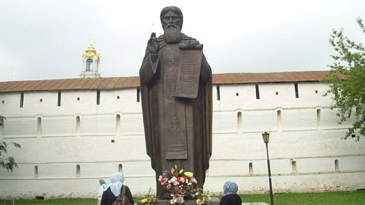
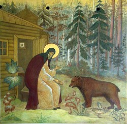
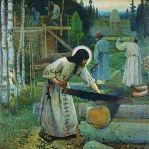

Памятник Сергию Радонежскому
-

- Памятник Сергию Радонежскому
Преподобный Сергий Радонежский, основатель Троицкого монастыря родился предположительно в 1314 году, в селе Варницы (близ Ростова) . При крещении ему было дано имя Варфоломей. Отца звали Кириллом, а мать — Марией. Так что он "по паспорту" Варфоломей Кириллович, правда фамилий тогда не было. Через несколько лет после рождения Варфоломей начал строго поститься и молиться по ночам. Он не играл с другими детьми, а часто ходил в церковь и читал святые книги.

Ещё при жизни родителей в душе Варфоломея возникло и укрепилось желание посвятить себя монашеской жизни; достигнув двадцатилетнего возраста, он решился постричься в монахи. Родители не возражали, но просили дождаться их смерти. После смерти родителей Варфоломей с братом Стефаном иноком Хотьково-Покровского монастыря основал пустынь на берегу реки Кончуры, на холме Маковец посреди глухого Радонежского бора, где и построил (около 1335 года) небольшую деревянную церковь во имя Святой Троицы, на месте которой стоит теперь соборный храм также во имя Святой Троицы.
Не выдержав слишком сурового и аскетичного образа жизни, Стефан вскоре уехал в московский Богоявленский монастырь. Варфоломей, оставшись в полном одиночестве, призвал некоего игумена Митрофана и принял от него постриг под именем Сергия. Так началась история Троице-Сергиевой Лавры.
Этот период красочно описан известным русским историком С.М. Соловьевым в книге «История России с древнейших времен». "Варфоломей, с малолетства обнаружил стремление к иночеству, и как только похоронил своих родителей, так немедленно удалился в пустыню - лес великий - и долго жил здесь один, не видя лица человеческого; один медведь приходил к пустыннику делить с ним его скудную пищу. Но как в старину Антоний не мог скрыть своих подвигов в пещере, так теперь Варфоломей, принявший при пострижении имя Сергия, не мог утаиться в дремучем лесу; иноки стали собираться к нему, несмотря на суровый привет, которым встречал их пустынник: «Знайте прежде всего, что место это трудно, голодно и бедно; готовьтесь не к пище сытной, не к питью, не к покою и веселию, но к трудам, поту, печалям, напастям». Явилось несколько бедных келий, огороженных тыном; сам Сергий своими руками построил три или четыре кельи, сам носил дрова из лесу и колол их, носил воду из колодезя и ставил ведра у каждой кельи, сам готовил кушанье на всю братию, шил платье и сапоги - одним словом, служил всем как раб купленный. И это-то смиренное служение прославило Сергия по всем областям русским и дало ему ту великую нравственную силу, то значение, с каким мы уже встречали его в политических событиях княжения Димитрия Донского; здесь мы видели Сергия грозным послом для Нижнего Новгорода, не повинующегося воле московского князя, тихим примирителем последнего с озлобленным Олегом рязанским, твердым увещателем в битве с полками Мамаевыми. Из монастыря Сергиева, прославленного святостию своего основателя, выведено было много колоний, много других монастырей в разные стороны, сподвижниками, учениками и учениками учеников Сергиевых. "